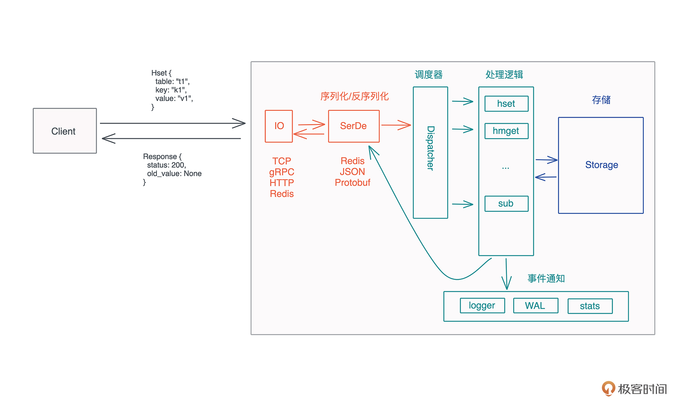

- 00 开篇词 让Rust成为你的下一门主力语言.md.html
- 01 内存：值放堆上还是放栈上，这是一个问题.md.html
- 02 串讲：编程开发中，那些你需要掌握的基本概念.md.html
- 03 初窥门径：从你的第一个Rust程序开始！.md.html
- 04 get hands dirty：来写个实用的CLI小工具.md.html
- 05 get hands dirty：做一个图片服务器有多难？.md.html
- 06 get hands dirty：SQL查询工具怎么一鱼多吃？.md.html
- 07 所有权：值的生杀大权到底在谁手上？.md.html
- 08 所有权：值的借用是如何工作的？.md.html
- 09 所有权：一个值可以有多个所有者么？.md.html
- 10 生命周期：你创建的值究竟能活多久？.md.html
- 11 内存管理：从创建到消亡，值都经历了什么？.md.html
- 12 类型系统：Rust的类型系统有什么特点？.md.html
- 13 类型系统：如何使用trait来定义接口？.md.html
- 14 类型系统：有哪些必须掌握的trait？.md.html
- 15 数据结构：这些浓眉大眼的结构竟然都是智能指针？.md.html
- 16 数据结构：Vec_T_、&[T]、Box_[T]_ ，你真的了解集合容器么？.md.html
- 17 数据结构：软件系统核心部件哈希表，内存如何布局？.md.html
- 18 错误处理：为什么Rust的错误处理与众不同？.md.html
- 19 闭包：FnOnce、FnMut和Fn，为什么有这么多类型？.md.html
- 20 4 Steps ：如何更好地阅读Rust源码？.md.html
- 21 阶段实操（1）：构建一个简单的KV server-基本流程.md.html
- 22 阶段实操（2）：构建一个简单的KV server-基本流程.md.html
- 23 类型系统：如何在实战中使用泛型编程？.md.html
- 24 类型系统：如何在实战中使用trait object？.md.html
- 25 类型系统：如何围绕trait来设计和架构系统？.md.html
- 26 阶段实操（3）：构建一个简单的KV server-高级trait技巧.md.html
- 27 生态系统：有哪些常有的Rust库可以为我所用？.md.html
- 28 网络开发（上）：如何使用Rust处理网络请求？.md.html
- 29 网络开发（下）：如何使用Rust处理网络请求？.md.html
- 30 Unsafe Rust：如何用C++的方式打开Rust？.md.html
- 31 FFI：Rust如何和你的语言架起沟通桥梁？.md.html
- 32 实操项目：使用PyO3开发Python3模块.md.html
- 33 并发处理（上）：从atomics到Channel，Rust都提供了什么工具？.md.html
- 34 并发处理（下）：从atomics到Channel，Rust都提供了什么工具？.md.html
- 35 实操项目：如何实现一个基本的MPSC channel？.md.html
- 36 阶段实操（4）：构建一个简单的KV server-网络处理.md.html
- 37 阶段实操（5）：构建一个简单的KV server-网络安全.md.html
- 38 异步处理：Future是什么？它和async_await是什么关系？.md.html
- 39 异步处理：async_await内部是怎么实现的？.md.html
- 40 异步处理：如何处理异步IO？.md.html
- 41 阶段实操（6）：构建一个简单的KV server-异步处理.md.html
- 42 阶段实操（7）：构建一个简单的KV server-如何做大的重构？.md.html
- 43 生产环境：真实世界下的一个Rust项目包含哪些要素？.md.html
- 44 数据处理：应用程序和数据如何打交道？.md.html
- 45 阶段实操（8）：构建一个简单的KV server-配置_测试_监控_CI_CD.md.html
- 46 软件架构：如何用Rust架构复杂系统？.md.html
- 加餐 Rust2021版次问世了！.md.html
- 加餐 代码即数据：为什么我们需要宏编程能力？.md.html
- 加餐 宏编程（上）：用最“笨”的方式撰写宏.md.html
- 加餐 宏编程（下）：用 syn_quote 优雅地构建宏.md.html
- 加餐 愚昧之巅：你的Rust学习常见问题汇总.md.html
- 加餐 期中测试：参考实现讲解.md.html
- 加餐 期中测试：来写一个简单的grep命令行.md.html
- 加餐 这个专栏你可以怎么学，以及Rust是否值得学？.md.html
- 大咖助场 开悟之坡（上）：Rust的现状、机遇与挑战.md.html
- 大咖助场 开悟之坡（下）：Rust的现状、机遇与挑战.md.html
- 特别策划 学习锦囊（一）：听听课代表们怎么说.md.html
- 特别策划 学习锦囊（三）：听听课代表们怎么说.md.html
- 特别策划 学习锦囊（二）：听听课代表们怎么说.md.html
- 用户故事 绝望之谷：改变从学习开始.md.html
- 用户故事 语言不仅是工具，还是思维方式.md.html
- 结束语 永续之原：Rust学习，如何持续精进？.md.html
- 捐赠
21 阶段实操（1）：构建一个简单的KV server-基本流程
你好，我是陈天。
从第七讲开始，我们一路过关斩将，和所有权、生命周期死磕，跟类型系统和 trait 反复拉锯，为的是啥？就是为了能够读懂别人写的代码，进而让自己也能写出越来越复杂且优雅的代码。
今天就到检验自身实力的时候了，毕竟talk is cheap，知识点掌握得再多，自己写不出来也白搭，所以我们把之前学的知识都运用起来，一起写个简单的 KV server。
不过这次和 get hands dirty 重感性体验的代码不同，我会带你一步步真实打磨，讲得比较细致，所以内容也会比较多，我分成了上下两篇文章，希望你能耐心看完，认真感受 Rust best practice 在架构设计以及代码实现思路上的体现。
为什么选 KV server 来实操呢？因为它是一个足够简单又足够复杂的服务。参考工作中用到的 Redis/Memcached 等服务，来梳理它的需求。
- 最核心的功能是根据不同的命令进行诸如数据存贮、读取、监听等操作；
- 而客户端要能通过网络访问 KV server，发送包含命令的请求，得到结果；
- 数据要能根据需要，存储在内存中或者持久化到磁盘上。
先来一个短平糙的实现
如果是为了完成任务构建 KV server，其实最初的版本两三百行代码就可以搞定，但是这样的代码以后维护起来就是灾难。
我们看一个省却了不少细节的意大利面条式的版本，你可以随着我的注释重点看流程：
use anyhow::Result;
use async_prost::AsyncProstStream;
use dashmap::DashMap;
use futures::prelude::*;
use kv::{
command_request::RequestData, CommandRequest, CommandResponse, Hset, KvError, Kvpair, Value,
};
use std::sync::Arc;
use tokio::net::TcpListener;
use tracing::info;
#[tokio::main]
async fn main() -> Result<()> {
// 初始化日志
tracing_subscriber::fmt::init();
let addr = "127.0.0.1:9527";
let listener = TcpListener::bind(addr).await?;
info!("Start listening on {}", addr);
// 使用 DashMap 创建放在内存中的 kv store
let table: Arc<DashMap<String, Value>> = Arc::new(DashMap::new());
loop {
// 得到一个客户端请求
let (stream, addr) = listener.accept().await?;
info!("Client {:?} connected", addr);
// 复制 db，让它在 tokio 任务中可以使用
let db = table.clone();
// 创建一个 tokio 任务处理这个客户端
tokio::spawn(async move {
// 使用 AsyncProstStream 来处理 TCP Frame
// Frame: 两字节 frame 长度，后面是 protobuf 二进制
let mut stream =
AsyncProstStream::<_, CommandRequest, CommandResponse, _>::from(stream).for_async();
// 从 stream 里取下一个消息（拿出来后已经自动 decode 了）
while let Some(Ok(msg)) = stream.next().await {
info!("Got a new command: {:?}", msg);
let resp: CommandResponse = match msg.request_data {
// 为演示我们就处理 HSET
Some(RequestData::Hset(cmd)) => hset(cmd, &db),
// 其它暂不处理
_ => unimplemented!(),
};
info!("Got response: {:?}", resp);
// 把 CommandResponse 发送给客户端
stream.send(resp).await.unwrap();
}
});
}
}
// 处理 hset 命令
fn hset(cmd: Hset, db: &DashMap<String, Value>) -> CommandResponse {
match cmd.pair {
Some(Kvpair {
key,
value: Some(v),
}) => {
// 往 db 里写入
let old = db.insert(key, v).unwrap_or_default();
// 把 value 转换成 CommandResponse
old.into()
}
v => KvError::InvalidCommand(format!("hset: {:?}", v)).into(),
}
}
这段代码非常地平铺直叙，从输入到输出，一蹴而就，如果这样写，任务确实能很快完成，但是它有种“完成之后，哪管洪水滔天”的感觉。
你复制代码后，打开两个窗口，分别运行 “cargo run –example naive_server” 和 “cargo run –example client”，就可以看到运行 server 的窗口有如下打印：
Sep 19 22:25:34.016 INFO naive_server: Start listening on 127.0.0.1:9527
Sep 19 22:25:38.401 INFO naive_server: Client 127.0.0.1:51650 connected
Sep 19 22:25:38.401 INFO naive_server: Got a new command: CommandRequest { request_data: Some(Hset(Hset { table: "table1", pair: Some(Kvpair { key: "hello", value: Some(Value { value: Some(String("world")) }) }) })) }
Sep 19 22:25:38.401 INFO naive_server: Got response: CommandResponse { status: 200, message: "", values: [Value { value: None }], pairs: [] }
虽然整体功能算是搞定了，不过以后想继续为这个 KV server 增加新的功能，就需要来来回回改这段代码。
此外，也不好做单元测试，因为所有的逻辑都被压缩在一起了，没有“单元”可言。虽然未来可以逐步把不同的逻辑分离到不同的函数，使主流程尽可能简单一些。但是，它们依旧是耦合在一起的，如果不做大的重构，还是解决不了实质的问题。
所以不管用什么语言开发，这样的代码都是我们要极力避免的，不光自己不要这么写，code review 遇到别人这么写也要严格地揪出来。
架构和设计
那么，怎样才算是好的实现呢？
好的实现应该是在分析完需求后，首先从系统的主流程开始，搞清楚从客户端的请求到最终客户端收到响应，都会经过哪些主要的步骤；然后根据这些步骤，思考哪些东西需要延迟绑定，构建主要的接口和 trait；等这些东西深思熟虑之后，最后再考虑实现。也就是所谓的“谋定而后动”。
开头已经分析 KV server 这个需求，现在我们来梳理主流程。你可以先自己想想，再参考示意图看看有没有缺漏：

这个流程中有一些关键问题需要进一步探索：
- 客户端和服务器用什么协议通信？TCP？gRPC？HTTP？支持一种还是多种？
- 客户端和服务器之间交互的应用层协议如何定义？怎么做序列化/反序列化？是用 Protobuf、JSON 还是 Redis RESP？或者也可以支持多种？
- 服务器都支持哪些命令？第一版优先支持哪些？
- 具体的处理逻辑中，需不需要加 hook，在处理过程中发布一些事件，让其他流程可以得到通知，进行额外的处理？这些 hook 可不可以提前终止整个流程的处理？
- 对于存储，要支持不同的存储引擎么？比如 MemDB（内存）、RocksDB（磁盘）、SledDB（磁盘）等。对于 MemDB，我们考虑支持 WAL（Write-Ahead Log） 和 snapshot 么？
- 整个系统可以配置么？比如服务使用哪个端口、哪个存储引擎？
- …
如果你想做好架构，那么，问出这些问题，并且找到这些问题的答案就很重要。值得注意的是，这里面很多问题产品经理并不能帮你回答，或者TA的回答会将你带入歧路。作为一个架构师，我们需要对系统未来如何应对变化负责。
下面是我的思考，你可以参考：
1.像 KV server 这样需要高性能的场景，通信应该优先考虑 TCP 协议。所以我们暂时只支持 TCP，未来可以根据需要支持更多的协议，如 HTTP2/gRPC。还有，未来可能对安全性有额外的要求，所以我们要保证 TLS 这样的安全协议可以即插即用。总之，网络层需要灵活。
2.应用层协议我们可以用 protobuf 定义。protobuf 直接解决了协议的定义以及如何序列化和反序列化。Redis 的 RESP 固然不错，但它的短板也显而易见，命令需要额外的解析，而且大量的 \r\n 来分隔命令或者数据，也有些浪费带宽。使用 JSON 的话更加浪费带宽，且 JSON 的解析效率不高，尤其是数据量很大的时候。
protobuf 就很适合 KV server 这样的场景，灵活、可向后兼容式升级、解析效率很高、生成的二进制非常省带宽，唯一的缺点是需要额外的工具 protoc 来编译成不同的语言。虽然 protobuf 是首选，但也许未来为了和 Redis 客户端互通，还是要支持 RESP。
3.服务器支持的命令我们可以参考Redis 的命令集。第一版先来支持 HXXX 命令，比如 HSET、HMSET、HGET、HMGET 等。从命令到命令的响应，可以做个 trait 来抽象。
4.处理流程中计划加这些 hook：收到客户端的命令后 OnRequestReceived、处理完客户端的命令后 OnRequestExecuted、发送响应之前 BeforeResponseSend、发送响应之后 AfterResponseSend。这样，处理过程中的主要步骤都有事件暴露出去，让我们的 KV server 可以非常灵活，方便调用者在初始化服务的时候注入额外的处理逻辑。
5.存储必然需要足够灵活。可以对存储做个 trait 来抽象其基本的行为，一开始可以就只做 MemDB，未来肯定需要有支持持久化的存储。
6.需要支持配置，但优先级不高。等基本流程搞定，使用过程中发现足够的痛点，就可以考虑配置文件如何处理了。
当这些问题都敲定下来，系统的基本思路就有了。我们可以先把几个重要的接口定义出来，然后仔细审视这些接口。
最重要的几个接口就是三个主体交互的接口：客户端和服务器的接口或者说协议、服务器和命令处理流程的接口、服务器和存储的接口。
客户端和服务器间的协议
首先是客户端和服务器之间的协议。来试着用 protobuf 定义一下我们第一版支持的客户端命令：
syntax = "proto3";
package abi;
// 来自客户端的命令请求
message CommandRequest {
oneof request_data {
Hget hget = 1;
Hgetall hgetall = 2;
Hmget hmget = 3;
Hset hset = 4;
Hmset hmset = 5;
Hdel hdel = 6;
Hmdel hmdel = 7;
Hexist hexist = 8;
Hmexist hmexist = 9;
}
}
// 服务器的响应
message CommandResponse {
// 状态码；复用 HTTP 2xx/4xx/5xx 状态码
uint32 status = 1;
// 如果不是 2xx，message 里包含详细的信息
string message = 2;
// 成功返回的 values
repeated Value values = 3;
// 成功返回的 kv pairs
repeated Kvpair pairs = 4;
}
// 从 table 中获取一个 key，返回 value
message Hget {
string table = 1;
string key = 2;
}
// 从 table 中获取所有的 Kvpair
message Hgetall { string table = 1; }
// 从 table 中获取一组 key，返回它们的 value
message Hmget {
string table = 1;
repeated string keys = 2;
}
// 返回的值
message Value {
oneof value {
string string = 1;
bytes binary = 2;
int64 integer = 3;
double float = 4;
bool bool = 5;
}
}
// 返回的 kvpair
message Kvpair {
string key = 1;
Value value = 2;
}
// 往 table 里存一个 kvpair，
// 如果 table 不存在就创建这个 table
message Hset {
string table = 1;
Kvpair pair = 2;
}
// 往 table 中存一组 kvpair，
// 如果 table 不存在就创建这个 table
message Hmset {
string table = 1;
repeated Kvpair pairs = 2;
}
// 从 table 中删除一个 key，返回它之前的值
message Hdel {
string table = 1;
string key = 2;
}
// 从 table 中删除一组 key，返回它们之前的值
message Hmdel {
string table = 1;
repeated string keys = 2;
}
// 查看 key 是否存在
message Hexist {
string table = 1;
string key = 2;
}
// 查看一组 key 是否存在
message Hmexist {
string table = 1;
repeated string keys = 2;
}
通过 prost，这个 protobuf 文件可以被编译成 Rust 代码（主要是 struct 和 enum），供我们使用。你应该还记得，之前在[第 5 讲]谈到 thumbor 的开发时，已经见识到了 prost 处理 protobuf 的方式了。
CommandService trait
客户端和服务器间的协议敲定之后，就要思考如何处理请求的命令，返回响应。
我们目前打算支持 9 种命令，未来可能支持更多命令。所以最好定义一个 trait 来统一处理所有的命令，返回处理结果。在处理命令的时候，需要和存储发生关系，这样才能根据请求中携带的参数读取数据，或者把请求中的数据存入存储系统中。所以，这个 trait 可以这么定义：
/// 对 Command 的处理的抽象
pub trait CommandService {
/// 处理 Command，返回 Response
fn execute(self, store: &impl Storage) -> CommandResponse;
}
有了这个 trait，并且每一个命令都实现了这个 trait 后，dispatch 方法就可以是类似这样的代码：
// 从 Request 中得到 Response，目前处理 HGET/HGETALL/HSET
pub fn dispatch(cmd: CommandRequest, store: &impl Storage) -> CommandResponse {
match cmd.request_data {
Some(RequestData::Hget(param)) => param.execute(store),
Some(RequestData::Hgetall(param)) => param.execute(store),
Some(RequestData::Hset(param)) => param.execute(store),
None => KvError::InvalidCommand("Request has no data".into()).into(),
_ => KvError::Internal("Not implemented".into()).into(),
}
}
这样，未来我们支持新命令时，只需要做两件事：为命令实现 CommandService、在 dispatch 方法中添加新命令的支持。
Storage trait
再来看为不同的存储而设计的 Storage trait，它提供 KV store 的主要接口：
/// 对存储的抽象，我们不关心数据存在哪儿，但需要定义外界如何和存储打交道
pub trait Storage {
/// 从一个 HashTable 里获取一个 key 的 value
fn get(&self, table: &str, key: &str) -> Result<Option<Value>, KvError>;
/// 从一个 HashTable 里设置一个 key 的 value，返回旧的 value
fn set(&self, table: &str, key: String, value: Value) -> Result<Option<Value>, KvError>;
/// 查看 HashTable 中是否有 key
fn contains(&self, table: &str, key: &str) -> Result<bool, KvError>;
/// 从 HashTable 中删除一个 key
fn del(&self, table: &str, key: &str) -> Result<Option<Value>, KvError>;
/// 遍历 HashTable，返回所有 kv pair（这个接口不好）
fn get_all(&self, table: &str) -> Result<Vec<Kvpair>, KvError>;
/// 遍历 HashTable，返回 kv pair 的 Iterator
fn get_iter(&self, table: &str) -> Result<Box<dyn Iterator<Item = Kvpair>>, KvError>;
}
在 CommandService trait 中已经看到，在处理客户端请求的时候，与之打交道的是 Storage trait，而非具体的某个 store。这样做的好处是，未来根据业务的需要，在不同的场景下添加不同的 store，只需要为其实现 Storage trait 即可，不必修改 CommandService 有关的代码。
比如在 HGET 命令的实现时，我们使用 Storage::get 方法，从 table 中获取数据，它跟某个具体的存储方案无关：
impl CommandService for Hget {
fn execute(self, store: &impl Storage) -> CommandResponse {
match store.get(&self.table, &self.key) {
Ok(Some(v)) => v.into(),
Ok(None) => KvError::NotFound(self.table, self.key).into(),
Err(e) => e.into(),
}
}
}
Storage trait 里面的绝大多数方法相信你可以定义出来，但 get_iter() 这个接口可能你会比较困惑，因为它返回了一个 Box
之前（[第 13 讲]）讲过这是 trait object。
这里我们想返回一个 iterator，调用者不关心它具体是什么类型，只要可以不停地调用 next() 方法取到下一个值就可以了。不同的实现，可能返回不同的 iterator，如果要用同一个接口承载，我们需要使用 trait object。在使用 trait object 时，因为 Iterator 是个带有关联类型的 trait，所以这里需要指明关联类型 Item 是什么类型，这样调用者才好拿到这个类型进行处理。
你也许会有疑问，set/del 明显是个会导致 self 修改的方法，为什么它的接口依旧使用的是 &self 呢？
我们思考一下它的用法。对于 Storage trait，最简单的实现是 in-memory 的 HashMap。由于我们支持的是 HSET/HGET 这样的命令，它们可以从不同的表中读取数据，所以需要嵌套的 HashMap，类似 HashMap
另外，由于要在多线程/异步环境下读取和更新内存中的 HashMap，所以我们需要类似 Arc
小结
到现在，我们梳理了 KV server 的主要需求和主流程，思考了流程中可能出现的问题，也敲定了三个重要的接口：客户端和服务器的协议、CommandService trait、Storage trait。下一讲继续实现 KV server，在看讲解之前，你可以先想一想自己平时是怎么开发的。
思考题
想一想，对于 Storage trait，为什么返回值都用了 Result
欢迎在留言区分享你的思考。我们下篇见～
© 2019 - 2023 Liangliang Lee. Powered by gin and hexo-theme-book.